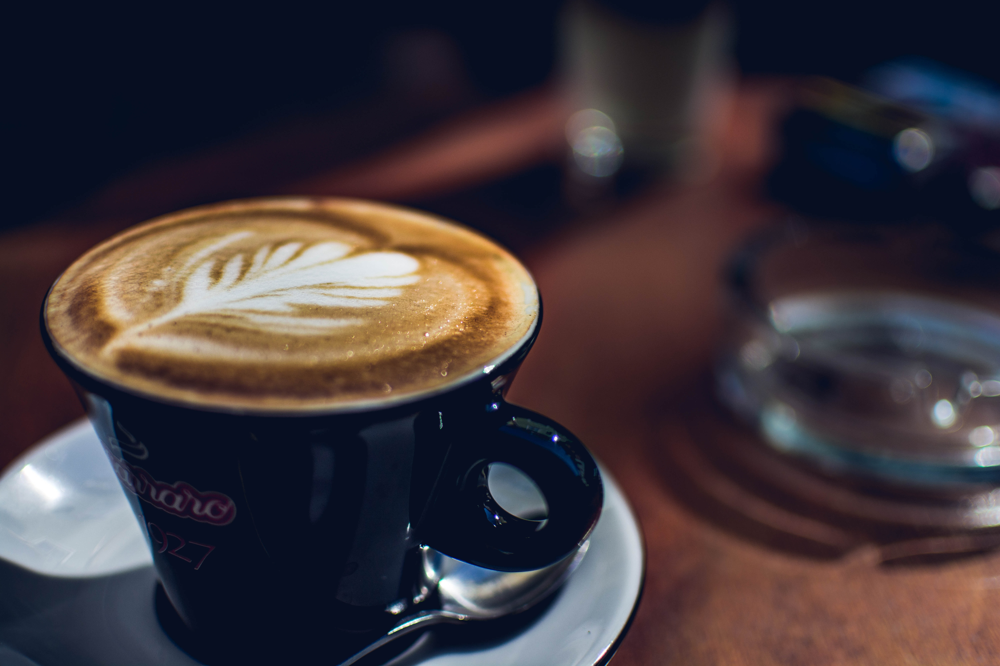
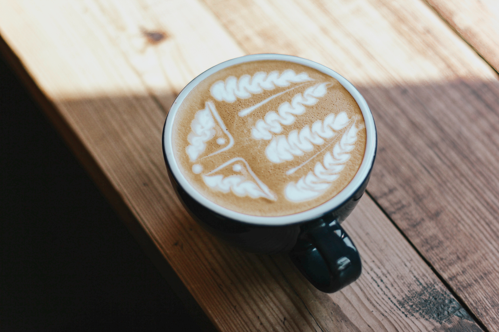

About Us
Welcome to The Coffee Joint, where we are passionate about delivering an exceptional coffee experience!
We source the finest beans from sustainable and ethically responsible farms, ensuring that each cup tells a story. Our expert roasters bring out the full potential of these beans, creating a symphony of rich, nuanced flavors that awaken your senses and transport you to coffee paradise.
Step into our cozy ambiance and be greeted by friendly baristas who are dedicated to brewing each cup to perfection. Whether you seek a tranquil moment of solitude, a cozy place to work, or a vibrant gathering with friends, The Coffee Joint is the place to be.
Join us on this journey of exploration and savor the moments, flavors, and magic that happen here.
Trivia - Do you know where coffee comes from? Expand to find out!
Even though the origin of coffee drinking is obscure, there is credible evidence of coffee drinking in the form of the modern beverage and it appears in modern-day Yemen from the mid-15th century in Sufi shrines, where coffee seeds were probably first roasted and brewed in a manner similar to current methods.
To learn more, clicke here.
Featured Products
House Blend
This is our signature coffee crafted to perfection at our coffee shop. With a harmonious blend of carefully selected beans, House Blend offers a delightful and well-balanced flavor profile that caters to every coffee lover's palate.
Savor the rich aroma and notes of chocolate and caramel that intertwine seamlessly, creating a truly captivating experience with every sip. Whether you prefer it black or with a touch of cream, House Blend promises a satisfying and comforting cup of coffee that will awaken your senses and invigorate your day.
Indulge in the essence of our House Blend, a true testament to the artistry and passion we pour into every cup.
| Small | Regular | Large |
|---|---|---|
| $2.00 | $4.00 | $6.00 |
Strong Beans

Strong Beans is our bold and robust coffee blend meticulously crafted for those seeking an invigorating and intense coffee experience. Sourced from the finest beans around the world, Strong Beans delivers a powerful and full-bodied flavor that awakens your senses with every sip.
Indulge in its deep, dark notes of cocoa and hints of smoky undertones, complemented by a velvety smooth texture that lingers on your palate. With its high caffeine content and bold character, Strong Beans is the perfect companion for those who crave a strong and energizing cup of coffee to kickstart their day or provide a revitalizing boost.
Embrace the strength and richness of Strong Beans, a coffee that embodies the essence of boldness and elevates your coffee experience to new heights.
| Small | Regular | Large |
|---|---|---|
| $3.00 | $6.00 | $9.00 |
The Fresh One
The Fresh One is our signature coffee blend that embodies the essence of freshness and vitality. Sourced from the finest coffee beans cultivated in pristine regions, The Fresh One offers a vibrant and aromatic experience that delights the senses.
Each cup delivers a harmonious balance of bright citrus notes and delicate floral undertones, complemented by a smooth and clean finish. Our meticulous roasting process ensures that every sip encapsulates the true essence of freshness, awakening your taste buds with each indulgent moment. Whether enjoyed as an invigorating morning pick-me-up or a delightful midday treat, The Fresh One promises a rejuvenating coffee experience that will leave you feeling refreshed and invigorated.
Embrace the vibrant flavors and invigorating aroma of The Fresh One, and embark on a journey of pure coffee bliss.
| Small | Regular | Large |
|---|---|---|
| $2.50 | $5.00 | $7.50 |